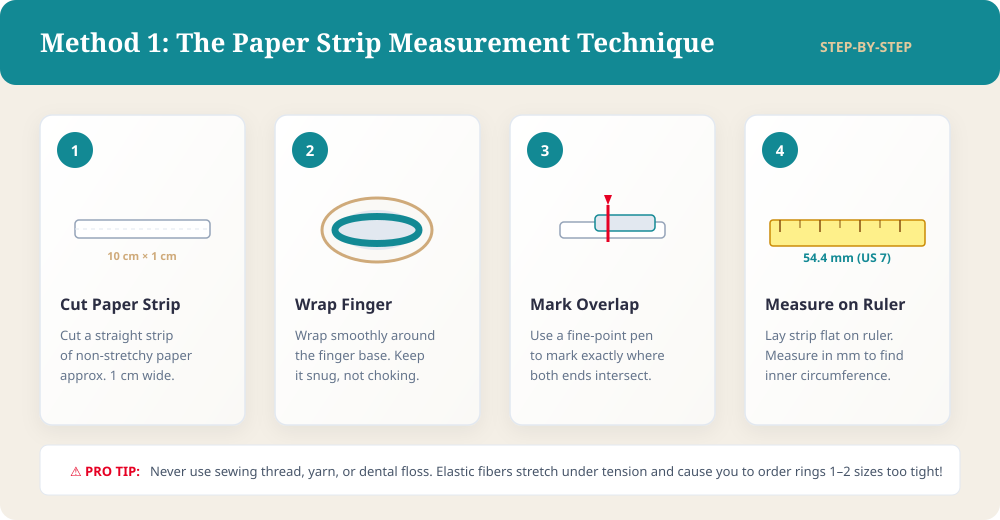
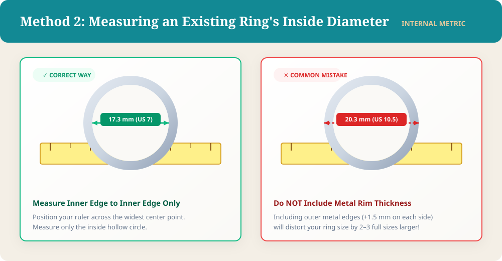
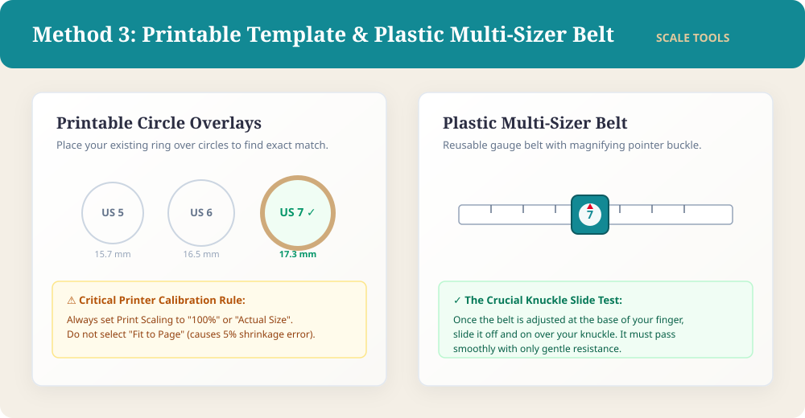

Finding a ring you love online should be an exciting and joyful experience. Whether you are treating yourself to a handcrafted sterling silver band, selecting an anniversary gift for someone special, or planning a secret surprise proposal, discovering the perfect design feels effortless. Yet shopping for jewelry from home often brings one major challenge: will it actually fit?
Unlike clothing made from stretchy fabrics, jewelry requires exact measurements to feel comfortable. Guessing your size often leads to disappointment, tedious return shipments, and the hassle of resizing fees. Fortunately, learning how to find your ring size right at home is simple, fast, and remarkably accurate.
You do not need specialized bench jeweler tools to find a dependable fit. By using everyday household supplies, understanding basic finger biology, and referencing a clear conversion chart, you can measure your finger with practical confidence. This guide walks you through four reliable measurement methods, international size standards, and essential jeweler tips to help ensure your next ring fits comfortably from day one.
Why Accurate Ring Size Matters
A ring is one of the few accessories you wear continuously throughout the day. When a ring fits properly, it feels practically weightless against your skin. It stays balanced, glides smoothly over your knuckle, and rests comfortably at the base of your finger without sliding around.
When the fit is wrong, daily wear becomes frustrating. A ring that is even half a size too small pinches delicate skin and restricts healthy circulation during warm afternoons. In severe cases, an overly tight band can get stuck over swollen knuckles, requiring emergency removal.
Conversely, an oversized ring brings constant anxiety. Loose bands spin continuously, causing gemstone solitaires to strike hard surfaces. Loose rings also slip off unnoticed while you wash hands, swim, or remove winter gloves.
Precision also protects your jewelry. While standard sterling silver and gold bands can be resized, every resizing stresses the metal shank. Modern alternative metals like tungsten, titanium, and ceramic cannot be resized at all. Getting your measurement right the first time avoids unnecessary expenses and protects your jewelry's craftsmanship.
Reliability Hierarchy of Ring Sizing Methods:
[1. Jeweler Metal Sizing Rings] ───► Highest Accuracy (Standard Benchmark)
[2. Plastic Multi-Sizer Belt] ───► Best Home Method (Knuckle Clearance Tested)
[3. Caliper on Existing Ring] ───► High Accuracy (Inside Diameter Only)
[4. Non-Stretchy Paper Strip] ───► Good Diagnostic Home Measurement
[5. String or Dental Floss] ───► Not Recommended (Stretches Under Tension)
Method 1: How to Find Your Ring Size with String or Paper
If you do not have an existing ring on hand, the paper strip technique is the simplest way to measure ring size at home. While many reach for thread or dental floss, non-stretchy paper is vastly superior because it will not stretch under tension.
Gather printer paper, scissors, a fine-tipped pen, and a millimeter ruler:
- Cut a paper strip: Cut a straight paper strip about 10 centimeters (4 inches) long and 1 centimeter (0.4 inches) wide to mimic a jewelry band.
- Wrap your finger: Wrap the strip smoothly around the base of your target finger. Make sure the paper lies flat without twisting.
- Pull until snug: Pull the paper so it hugs your skin comfortably. It should feel secure without pinching.
- Mark the overlap: Using a fine-tipped pen, mark a clean line across both layers of paper where the strip overlaps.
- Measure in millimeters: Lay the strip flat against your ruler and measure from the starting edge to your pen mark.
This millimeter figure represents the inside circumference of your finger. Record the number, repeat the process three times for consistency, and compare it to our sizing chart below.

Method 2: Measure an Existing Ring (The Diameter Technique)
If you already own a ring that fits your target finger comfortably, measuring its dimensions is the fastest route. This method is also ideal if you are trying to find someone else's ring size secretly for a surprise proposal.
Ensure the donor ring fits the exact finger where the new ring will be worn, as dominant hand fingers are typically larger. Also confirm the band is still round and undistorted:
- Place the ring flat: Lay your ring flat on a desk or white sheet of paper in bright light.
- Align your ruler across the center: Lay a millimeter ruler across the widest open center of the ring to find the true diameter.
- Measure inner edge to inner edge: Record the distance across the inner circle only. Do not include outer metal rims, as band thickness will distort your measurement by two full sizes.
- Use calipers for precision: If available, digital calipers measure inside diameter instantly to the tenth of a millimeter, removing all guesswork.
Compare your internal millimeter diameter to our ring size chart below to identify your ideal size.

Method 3: Use a Printable Ring Sizer
A printable ring sizer offers a visual tool that simplifies home sizing. Online jewelers frequently provide downloadable PDF guides featuring calibrated sizing circles alongside printable paper measuring belts.
When using a printable guide, accurate printer scaling is critical:
- Verify printer settings: In your print menu, verify page scaling is set to "100%" or "Actual Size." Never select "Fit to Page," which shrinks documents and ruins measurements.
- Check calibration marks: Reliable printouts include a credit card outline or reference line. Verify that your physical credit card matches the printed outline before measuring.
- Use circular cutout guides: Place your existing ring over the printed circles. Your size corresponds to the circle whose outline aligns with the inside rim of your band.
- Try a plastic multisizer: Inexpensive reusable plastic belt sizers loop over your finger with a magnifying buckle. They slide over your knuckle like an actual ring, making them significantly more dependable than paper templates.

Method 4: Visit a Jeweler for Professional Sizing
While measuring at home is convenient, visiting a local jewelry boutique remains the single most accurate way to verify your ring size. Professional jewelers use calibrated sizing tools that eliminate every variable, and almost all stores provide sizing for free.
A jeweler will measure your finger using professional metal sizing gauges:
- Testing Standard vs. Comfort Fit Gauges: Jewelers provide separate gauge sets for flat bands and rounded comfort fit wedding bands. Comfort fit rings slip over knuckles with less friction and often fit a half-size looser.
- Matching Ring Band Widths: Sizing gauge sets include slim 2mm bands and wide 8mm styles. Testing a gauge matching your intended width ensures your ring will not feel tight.
- Using Calibrated Mandrels: If you bring an existing ring, the jeweler can slip it onto a steel mandrel to read the exact size within seconds.
Visiting a jeweler is strongly recommended before ordering custom bridal jewelry or unalterable gemstone bands.

Ring Size Chart: US, UK, and EU Conversions
Ring sizing scales vary around the globe. The United States and Canada use numerical sizes from 3 to 13.5. The United Kingdom and Australia use an alphabetical system from F to Z+. European countries following the ISO standard measure rings directly by their inside circumference in millimeters.
When shopping for jewelry online or browsing international designers, converting accurately between US/UK/EU ring sizes with a dependable ring size conversion chart is essential. Use the chart below to convert your measurements across major international standards:
| US / Canada | Inside Diameter (mm) | Inside Circumference (mm) | UK / Australia | EU / ISO | Asian (Japan/China) |
|---|---|---|---|---|---|
| 4.0 | 14.9 mm | 46.8 mm | H | 47 | 7 |
| 5.0 | 15.7 mm | 49.3 mm | J 1/2 | 49.5 | 9 |
| 5.5 | 16.1 mm | 50.6 mm | K 1/2 | 50.5 | 10 |
| 6.0 | 16.5 mm | 51.9 mm | L 1/2 | 52 | 11 |
| 6.5 | 16.9 mm | 53.1 mm | M 1/2 | 53 | 12 |
| 7.0 | 17.3 mm | 54.4 mm | N 1/2 | 54.5 | 14 |
| 7.5 | 17.7 mm | 55.7 mm | P | 56 | 15 |
| 8.0 | 18.1 mm | 57.0 mm | Q | 57 | 16 |
| 8.5 | 18.5 mm | 58.3 mm | R | 58.5 | 17 |
| 9.0 | 18.9 mm | 59.5 mm | S | 59.5 | 19 |
| 9.5 | 19.4 mm | 60.8 mm | T | 61 | 20 |
| 10.0 | 19.8 mm | 62.1 mm | U | 62 | 21 |
| 11.0 | 20.6 mm | 64.6 mm | W | 65 | 23 |
| 12.0 | 21.4 mm | 67.2 mm | Y | 67 | 25 |
Always rely on your millimeter measurements as the universal anchor. Millimeters represent physical dimensions that never change across differing brand naming systems.

Essential Tips for Accuracy When Measuring Your Finger
Finger circumference fluctuates throughout the day due to temperature, diet, and physical activity. Keep these practical tips in mind to ensure your measurements reflect everyday life:
1. Measure in the Late Afternoon
Fingers are naturally smaller in the morning because fluid balances shift overnight. As you move around, blood circulation increases and fingers settle into their normal size. Always measure your finger between 3:00 PM and 7:00 PM.
2. Check Ambient Room Temperature
Cold air causes blood vessels to constrict, shrinking fingers by up to half a size. Conversely, hot summer weather and workouts cause temporary swelling. Always measure your hands at comfortable room temperature when relaxed.
3. Factor in Your Knuckle Size
If your knuckle is wider than the base of your finger, measure both the knuckle and the finger base. Choose a size halfway between both numbers so the ring slides over the knuckle smoothly while remaining secure at the base.

4. Account for Band Width
Band width strongly affects fit. Narrow bands (under 3mm) slide on effortlessly, whereas wide bands (6mm and wider) cover more skin surface and create friction. Jewelers recommend ordering a half-size larger for rings 6mm wide or greater. For an in-depth breakdown of millimeter proportions, read our Wedding Band Width Guide.
5. Measure the Correct Hand
Dominant hand fingers are typically half a size to a full size larger than non-dominant fingers due to increased muscle tone. Always measure the specific finger where the ring will be worn.
Common Ring Sizing Mistakes to Avoid
A slight measuring error can easily lead to a ring that is one or two sizes off. Avoiding these common mistakes will save you time and ensure a hassle-free fit:
- Using Stretchy Strings: Avoid thread and yarn. These fibers stretch as you wrap them, creating an artificially short measurement and a ring that fits far too tightly. Always use non-stretchy paper.
- Pulling the Strip Too Tight: Pull your paper strip snug, but do not let it crease your skin. If the paper indents your finger, your measured size will be too small.
- Relying on One Measurement: Never order fine jewelry after a single measurement. Measure your finger three or four times across two days to confirm consistent results.
- Measuring the Outer Rim: When measuring an existing ring, measure strictly from inner edge to inner edge. Including the metal band itself creates an oversized reading.
- Assuming One Size Fits Every Finger: Every finger has distinct dimensions. Your index, middle, and ring fingers differ in size and change slightly across seasons.
What to Do If You're Between Ring Sizes
It is very common for your millimeter measurement to land between two standard sizes — such as between a US size 6 and a size 6.5. Knowing when to size up or size down ensures lasting comfort:
When to Size Up
In most cases, sizing up to the next quarter or half size is the safer choice. A slightly roomier ring can be adjusted easily, while a tight ring pinches. Round up if:
- You are ordering a wide band (5mm or wider).
- You plan to stack multiple bands on the same finger.
- You live in a warm, humid climate where fingers frequently swell.
- Your knuckles are noticeably larger than the base of your finger.
- The ring is crafted from unalterable metals like tungsten or titanium.
When to Size Down
Rounding down makes sense if you are buying a slender band (under 2mm), if the ring features an ergonomic comfort fit interior, or if you have tapered fingers with small knuckles where loose rings slide off easily.
Easy Fixes for Loose Rings
If your ring arrives feeling slightly loose, soft silicone ring adjusters wrap discreetly around the band to reduce it by half a size. Alternatively, a jeweler can add small sizing beads inside the band to keep it upright.

Frequently Asked Questions
Can I use a tape measure to find my ring size?
You can use a flexible cloth measuring tape with millimeter marks, but tape measures are often thick, making it difficult to wrap them cleanly around your finger. A narrow strip of paper or a plastic ring sizer is much more accurate.
Does finger size fluctuate during pregnancy?
Yes, fluid retention and hormonal shifts during pregnancy frequently cause fingers to swell by one to two full sizes. If you are experiencing temporary body changes, consider wearing a temporary silicone band until your size stabilizes.
Why does a wide ring feel tighter than a thin ring?
Wide bands cover more surface area on your finger, creating additional friction against skin tissue. A thin 2mm ring moves freely, while an 8mm band fits firmly. Jewelers recommend ordering a half-size larger for wide bands.
How can I measure ring size secretly for a proposal?
Borrow a ring your partner regularly wears on their ring finger, and measure its inside diameter with a millimeter ruler. You can also press the ring into a bar of soap to create a physical impression, or slip it onto your own finger and mark where it stops.
What is the most common ring size for women and men?
In the United States, the average ring size for women is size 6 to 6.5, while the average for men is size 9.5 to 10. However, everyone's hands are unique, so taking time to learn how to measure finger size is always the best approach.
Conclusion: How to Find Your Ring Size with Complete Confidence
Shopping for rings online should be an exciting and rewarding journey, not a stressful guessing game. Whether you measure your finger with a simple strip of paper, check an existing favorite against a millimeter ruler, or print an accurate size guide, learning how to find your ring size allows you to shop with complete peace of mind.
Remember to take measurements in the late afternoon, keep ambient temperatures comfortable, and take band width into account. By taking just a few minutes to measure your finger accurately today, you can ensure that your next silver band or special gift fits beautifully the moment it arrives.
Explore Certified 925 Solid Sterling Silver Rings
From delicate stackable bands to ergonomic comfort-fit wedding rings, find your perfect fit handcrafted with artisan care.
Browse Handcrafted Rings →